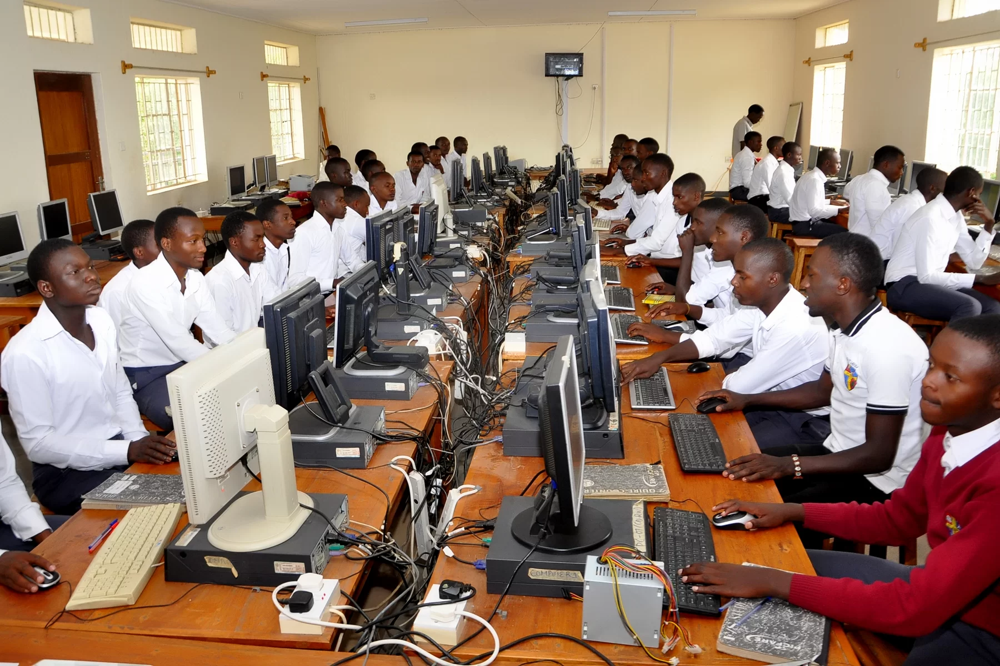

Quick Bites
Ownership
The School belongs to Mbarara Archdiocese
and is under the Archbishop of Mbarara,
governed by the Board of Governors, and
headed by a Priest- Rev. Fr. Dr. Godwin Muhangi.

Student Information
Total enrolment: 956 students
Age bracket: Between 11 and 20 years
Catchment areas: Districts of Mbarara,
Ntungamo, Bushenyi, Ibanda, and Isingiro.

Performance
St. Joseph’s Vocational School is one of the
best performing schools in the area and in the
country at large. It has produced many doctors, teachers,
priests, bankers, Engineers, Lawyers, etc.